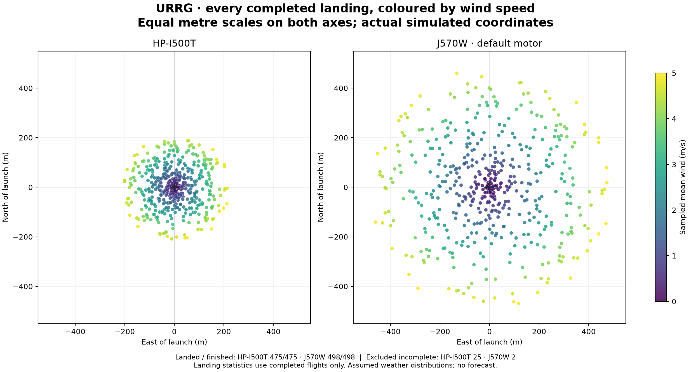
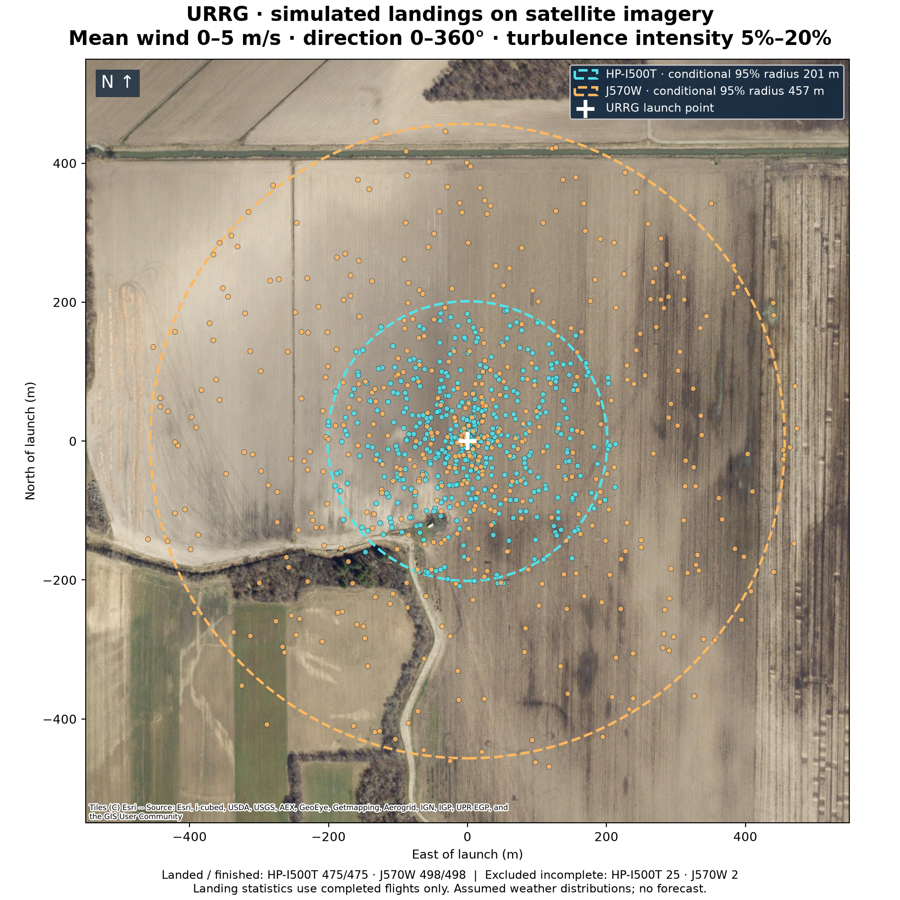
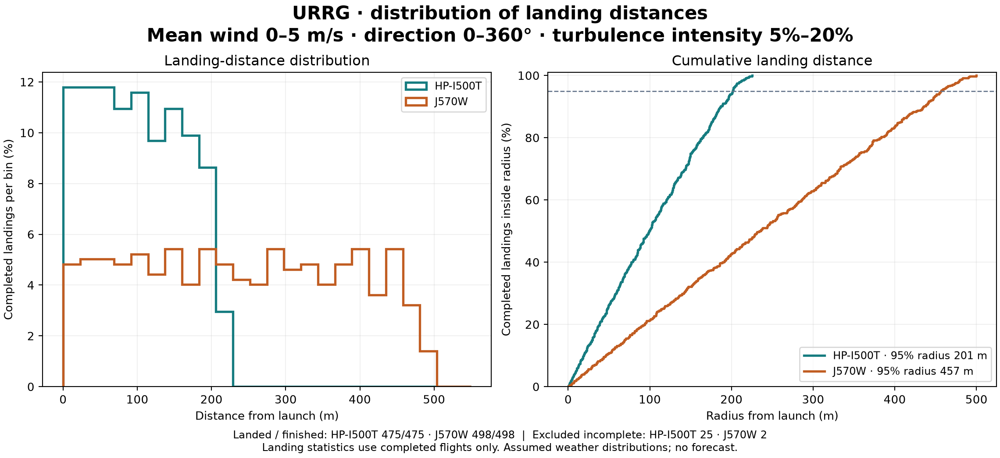

URRG · 11 October 2026 · MGRS 18TUN2061530290
500 simulated flights per motor. Mean wind sampled uniformly from 0–5 m/s, direction from 0–360°, and turbulence intensity from 5–20%. Each motor receives the same weather samples; native OpenRocket pink noise varies wind speed during each flight.
No drogue. Main deployment at apogee + 1 second. Vertical 1 m rail. Rocket design and other flight settings follow the supplied model.
25 I500T and 2 J570W tumble aborts are excluded. Landing statistics are conditional on finished simulations; abort counts are not a quantified physical failure probability. The 5 m/s cap is on mean wind, so gusts can exceed it. These are assumed weather scenarios, not a forecast. Mean direction and speed are constant with altitude; within-flight direction changes are not modelled.
Full results and assumptions · Landing coordinates and trial inputs · Map points and circles · Validation results


